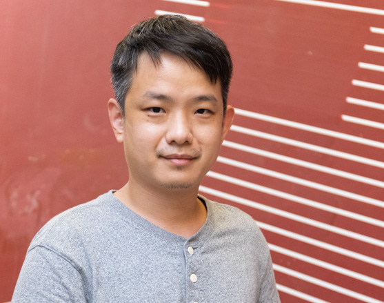

NRF-ASPIRE Workshop · Talk Series 2026
Listening through the body
Combining visual, auditory, and haptic interaction for designing a concert space for XR
Register


About the workshop
A concert is never only something you hear. You feel the room, you watch the players breathe, the floor moves under the bass. When a venue is rebuilt for a headset, those channels stop arriving together unless someone designs them that way. This workshop asks how visual, auditory, and haptic interaction can be composed as one instrument rather than three layers stacked in a scene graph.
Program
Morning
09:00–09:50
Registration · TBA
09:50–10:10
Welcome by Prof. Andrea Bianchi
10:10–10:50
Keynote
Prof. Yiyun Kang
TBA
10:50–11:30
Keynote
Prof. Yoichi Miyawaki
TBA
11:30–11:45
Group photo and break
11:45–11:55
Lightning talk
Prof. Sang Ho Yoon
TBA
11:55–12:05
Lightning talk
Prof. Pengcheng An
TBA
12:15
Lunch break · On your own
Afternoon
13:50–14:00
Lightning talk
ETRI
TBA
14:00–14:10
Lightning talk
Prof. Xueliang Li
TBA
14:10–14:20
Lightning talk
Dr. Azumi Maekawa
TBA
14:30–16:00
Demos and posters
16:00–16:30
Coffee break
16:30–17:10
Closing keynote
Prof. Kening Zhu
TBA
17:15
Closing remarks by Prof. Andrea Bianchi
17:30
End
18:00
Dinner · Invited participants only
Speakers
Keynotes
40 minutes each, including questions

Prof. Yiyun Kang
KAIST

Prof. Yoichi Miyawaki
The University of Electro-Communications

Prof. Kening Zhu
City University of Hong Kong
Talks
Lightning format, 10 minutes each


Venue
KAIST Dogok Campus, Seoul
Room to be announced
25 Nonhyeon-ro 28-gil, Gangnam-gu, Seoul
서울특별시 강남구 논현로28길 25
Getting here
Maebong Station, Seoul Subway Line 3. Leave by Exit 4 and walk about five minutes.
Register
Participation is free for everyone. Registration closes when the workshop reaches capacity.
Submit Google FormOrganized by make Lab, KAIST
Organizers